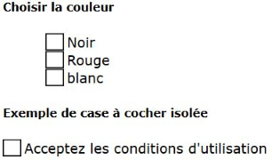

Description

Ce composant permet d'implémenter une case à cocher, équivalente au type HTML "checkbox".
Restitution
- Le composant doit posséder un nom accessible (ressource en anglais).
- l'état coché ou décoché doit être vocalisé.
Interactions de base au clavier
Les interactions au clavier sont :
- Les touches Espace et Entrée doivent cocher ou décocher la case à cocher.
Motif de conception : Checkbox (WAI-ARIA Authoring Practices 1.1)